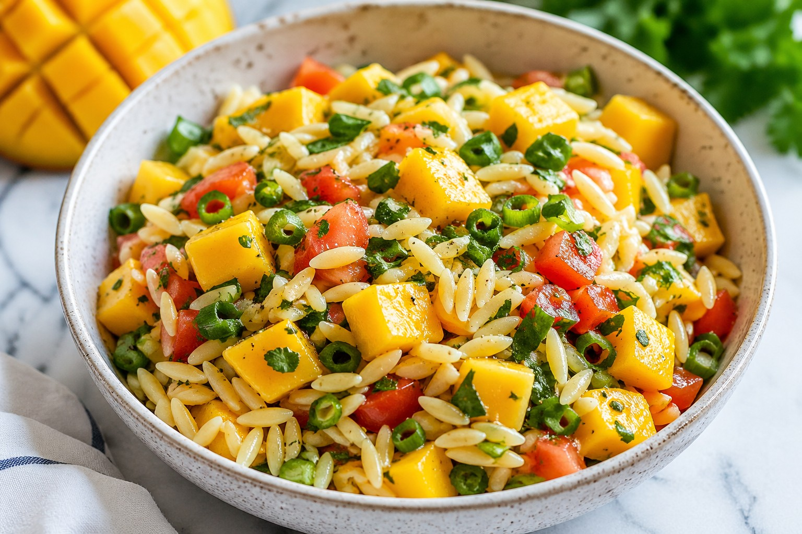

Fresh Mango Orzo Salad
This mango orzo salad is light, refreshing, and easy to prepare.

Ingredients
- Orzo
- Mango
- Tomatoes
- Scallions
- Parsley
- Lemon
- Honey
Instructions
- Cook orzo
- Mix ingredients
- Prepare dressing
- Combine and serve
Why I Created This Recipe
This recipe is designed to be simple, refreshing, and flexible for everyday meals.